소방설비기사(기계분야) (2017-09-23 기출문제)
1과목: 소방원론
1. 건축물에 설치하는 방화벽의 구조에 대한 기준 중 틀린 것은?
- 내화구조로서 홀로 설 수 있는 구조이어야 한다.
- 방화벽의 양쪽 끝은 지붕면으로부터 0.2m 이상 튀어 나오게 하여야 한다.
- 방화벽의 위쪽 끝은 지붕면으로부터 0.5m 이상 튀어 나오게 하여야 한다.
- 방화벽에 설치하는 출입문은 너비 및 높이가 각각 2.5m 이하인 갑종방화문을 설치하여야 한다.
(정답률: 67%)

2. 목재 화재 시 다량의 물을 뿌려 소화할 경우 기대되는 주된 소화효과는?
- 제거효과
- 냉각효과
- 부촉매효과
- 희석효과
(정답률: 76%)
3. 폭발의 형태 중 화학적 폭발이 아닌 것은?
- 분해폭발
- 가스폭발
- 수증기폭발
- 분진폭발
(정답률: 69%)
4. 이산화탄소 20g은 몇 mol인가?
- 0.23
- 0.45
- 2.2
- 4.4
(정답률: 57%)
5. FM200이라는 상품명을 가지며 오존파괴 지수(ODP)가 0인 할론 대체 소화약제는 무슨 계열인가?
- HFC 계열
- HCFC 계열
- FC 계열
- Blend 계열
(정답률: 56%)
6. 포소화약제 중 고팽창포로 사용할 수 있는 것은?
- 단백포
- 불화단백포
- 내알코올포
- 합성계면활성제포
(정답률: 64%)
7. 공기 중에서 자연발화 위험성이 높은 물질은?
- 벤젠
- 톨루엔
- 이황화탄소
- 트리 에틸알루미늄
(정답률: 47%)
8. 분말소화약제에 관한 설명 중 틀린 것은?
- 제1종 분말은 담홍색 또는 황색으로 착색되어 있다.
- 분말의 고화를 방지하기 위하여 실리콘 수지 등으로 방습처리 한다.
- 일반화재에도 사용할 수 있는 분말소화약제는 제3종 분말이다.
- 제2종 분말의 열분해식은 2KHCO3 → K2CO3＋CO2＋H2O이다.
(정답률: 66%)
9. 화재의 종류에 따른 분류가 틀린 것은?
- A 급 : 일반화재
- B 급 : 유류화재
- C 급 : 가스화재
- D급 : 금속화재
(정답률: 76%)
10. 연소확대 방지를 위한 방화구획과 관계없는 것은?
- 일반 승강기의 승강장 구획
- 층 또는 면적별 구획
- 용도별 구획
- 방화댐퍼
(정답률: 59%)
11. 질소 79.2vol.%, 산소 20.8vol.%로 이루어진 공기의 평균분자량은?
- 15.44
- 20.21
- 28.83
- 36.00
(정답률: 63%)
12. 제3류 위험물로서 자연발화성만 있고 금수성이 없기 때문에 물속에 보관하는 물질은?
- 염소산암모늄
- 황린
- 칼륨
- 질산
(정답률: 74%)
13. 화재 시 소화에 관한 설명으로 틀린 것은?
- 내알코올포 소화약제는 수용성용제의 화재에 적합하다.
- 물은 불에 닿을 때 증발하면서 다량의 열을 흡수하여 소화한다.
- 제3종 분말소화약제는 식용유화재에 적합하다.
- 할로겐화합물 소화약제는 연쇄반응을 억제하여 소화한다.
(정답률: 61%)
14. 고비점 유류의 탱크화재 시 열유층에 의해 탱크 아래의 물이 비등·팽창하여 유류를 탱크 외부로 분출시켜 화재를 확대시키는 현상은?
- 보일 오버(Boil over)
- 롤 오버 (Roll over)
- 백 드래프트(Back draft)
- 플래시 오버(Flash over)
(정답률: 75%)
15. 건물의 주요 구조부에 해당되지 않는 것은?
- 바닥
- 천장
- 기둥
- 주계단
(정답률: 64%)
16. 공기 중에서 연소범위가 가장 넓은 물질은?
- 수소
- 이황화탄소
- 아세틸렌
- 에테르
(정답률: 52%)
17. 휘발유의 위험성에 관한 설명으로 틀린 것은?
- 일반적인 고체 가연물에 비해 인화점이 낮다.
- 상온에서 가연성 증기가 발생한다.
- 증기는 공기보다 무거워 낮은 곳에 체류한다.
- 물보다 무거워 화재발생 시 물분무소화는 효과가 없다.
(정답률: 60%)
18. 피난층에 대한 정의로 옳은 것은?
- 지상으로 통하는 피난계단이 있는 층
- 비상용 승강기의 승강장이 있는 층
- 비상용 출입구가 설치되어 있는 층
- 직접 지상으로 통하는 출입구가 있는 층
(정답률: 66%)
19. 전기불꽃, 아크 등이 발생하는 부분을 기름 속에 넣어 폭발을 방지하는 방폭구조는?
- 내압방폭구조
- 유입방폭구조
- 안전증방폭구조
- 특수방폭구조
(정답률: 69%)
20. 할로겐원소의 소화효과가 큰 순서대로 배열된 것은?
- I > Br > Cl > F
- Br > I > F > Cl
- Cl > F > I > Br
- F > Cl > Br > I
(정답률: 57%)
2과목: 소방유체역학
21. 질량 m[kg]의 어떤 기체로 구성된 밀폐계가 Q[kg]의 열을 받아 일을 하고, 이 기체의 온도가 △C℃ 상승하였다면 이 계가 외부에 한 일(W)은? (단, 이 기체의 정적비열은 Cv [kJ/(kg·K)], 정압비열은 Cp [kJ/(kg·K)]이다.)
- W = Q - mCv△T
- W = Q ＋ mCv△T
- W = Q - mCp△T
- W = Q ＋ mCp△T
(정답률: 46%)
22. 그림과 같이 수조의 밑 부분에 구멍을 뚫고 물을 유량 Q로 방출시키고 있다. 손실을 무시할 때 수위가 처음 높이의 1/2로 되었을 때 방출되는 유량은 어떻게 되는가?
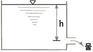
- 1/√2·Q
- 1/2·Q
- 1/√3·Q
- 1/3·Q
(정답률: 60%)
23. 그림과 같이 기름이 흐르는 관에 오리피스가 설치되어 있고, 그 사이의 압력을 측정하기 위해 U 자형 차압 액주계가 설치되어 있다. 이때 두 지점 간의 압력차(Px-Py)는 약 몇 kPa인가?
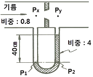
- 28.8
- 15.7
- 12.5
- 3.14
(정답률: 43%)
24. 지름이 5㎝인 소방 노즐에서 물제트가 40m/s의 속도로 건물 벽에 수직으로 충돌하고 있다. 벽이 받는 힘은 약 몇 N인가?
- 1204
- 2253
- 2570
- 3141
(정답률: 49%)
25. 체적이 0.1m3인 탱크 안에 절대압력이 1000kPa인 공기가 6.5kg/m3의 밀도로 채워져 있다. 시간이 t=0일 때 단면적이 70mm2인 1차원 출구로 공기가 300m/s의 속도로 빠져나가기 시작 한다면 그 순간에서의 밀도 변화율 kg/ (m3·s)은 약 얼마인가? (단, 탱크 안의 유체의 특성량은 일정하다고 가정한다.)
- -1.365
- -1.865
- -2.365
- -2.865
(정답률: 27%)
26. 모세관에 일정한 압력차를 가함에 따라 발생하는 층류 유동의 유량을 측정함으로써 유체의 점도를 측정할 수 있다. 같은 압력차에서 두 유체의 유량의 비 Q2/Q1=2이고, 밀도비 Ρ2/Ρ1=2일 때, 점성계수비 μ2/μ1은?
- 1/4
- 1/2
- 1
- 2
(정답률: 41%)
27. 다음 중 동일한 액체의 물성치를 나타낸 것이 아닌 것은?
- 비중이 0.8
- 밀도가 800kg/m3
- 비중량이 7840N/m3
- 비체적이 1.25m3/kg
(정답률: 57%)
28. 길이가 5m이며 외경과 내경이 각각 40㎝와 30㎝인 환형(annular)관에 물이 4m/s의 평균속도로 흐르고 있다. 수력지름에 기초한 마찰계수가 0.02일 때 손실수두는 약 몇 m인가?
- 0.063
- 0.204
- 0.472
- 0.816
(정답률: 39%)
29. 열전달 면적이 A이고 온도 차이가 10℃, 벽의 열전도율이 10W/(m·k), 두께 25㎝인 벽을 통한 열류량은 100W이다. 동일한 열전달 면적에서 온도 차이가 2배, 벽의 열전도율이 4배가 되고 벽의 두께가 2배가 되는 경우 열류량은 약 몇 W인가?
- 50
- 200
- 400
- 800
(정답률: 51%)
30. 길이 1200m, 안지름 100mm인 매끈한 원관을 통해서 0.01m3/s의 유량으로 기름을 수송한다. 이때 관에서 발생하는 압력손실은 약 몇 kPa인가? (단, 기름의 비중은 0.8, 점성계수는 0.06N·s/m2이다.)
- 163.2
- 201.5
- 293.4
- 349.7
(정답률: 38%)
31. Carnot 사이클이 800K의 고온 열원과 500K의 저온 열원 사이에서 작동한다. 이 사이클에 공급하는 열량이 사이클 당 800kJ이라 할 때, 한 사이클 당 외부에 하는 일은 약 몇 k j인가?
- 200
- 300
- 400
- 500
(정답률: 49%)
32. 대기 중으로 방사되는 물제트에 피토관의 흡입구를 갖다 대었을 때, 피토관의 수직부에 나타나는 수주의 높이가 0.6 m라고 하면, 물제트의 유속은 약 몇 m/s인가? (단, 모든 손실은 무시한다.)
- 0.25
- 1.55
- 2.75
- 3.43
(정답률: 49%)
33. 안지름이 13mm인 옥내소화전의 노즐에서 방출되는 물의 압력(계기압력)이 230kPa이라면 10분 동안의 방수량은 약 몇 m3인가?
- 1.7
- 3.6
- 5.2
- 7.4
(정답률: 41%)
34. 계기압력이 730mmHg이고 대기압이 101.3kPa 일 때 절대압력은 약 몇 kPa인가? (단, 수은의 비중은 13.6이다.)
- 198.6
- 100.2
- 214.4
- 93.2
(정답률: 54%)
35. 펌프의 공동현상(cavitation)을 방지하기 위한 대책으로 옳지 않은 것은?
- 펌프의 설치높이를 될 수 있는 대로 높여서 흡입양정을 길게 한다.
- 펌프의 회전수를 낮추어 흡입 비속도를 적게 한다.
- 단흡입펌프보다는 양흡입펌프를 사용한다.
- 밸브, 플랜지 등의 부속품 수를 줄여서 손실수두를 줄인다.
(정답률: 68%)
36. 이상적인 교축 과정 (throttling process)에 대한 설명 중 옳은 것은?
- 압력이 변하지 않는다.
- 온도가 변하지 않는다.
- 엔탈피가 변하지 않는다.
- 엔트로피가 변하지 않는다.
(정답률: 47%)
37. 피스톤 A2의 반지름이 A1의 반지름의 2배이며, A1과 A2사에 작용하는 압력을 각각 P1, P2라 하면, 두 피스톤이 같은 높이에서 평형을 이룰 때 P1과 P2 사이의 관계는?
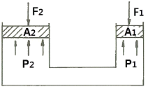
- P1 = 2P2
- P2 = 4P1
- P1 = P2
- P2 = 2P1
(정답률: 40%)
38. 전양정 80m, 토출량 500L/min인 물을 사용하는 소화펌프가 있다. 펌프효율 65%, 전달계수(K) 1.1인 경우 필요한 전동기의 최소 동력은 약 몇 kW인가?
- 9 kW
- 11 kW
- 13 kW
- 15 kW
(정답률: 62%)
39. 그림과 같이 수조에 비중이 1.03인 액체가 담겨있다. 이 수조의 바닥면적이 4m2일 때의 수조바닥 전체에 작용하는 힘은 약 몇 kN인가? (단, 대기압은 무시한다.)
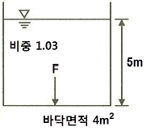
- 98
- 51
- 156
- 202
(정답률: 51%)
40. 유체가 평판 위를 u(m/s)=500y-6y2의 속도분포로 흐르고 있다. 이때 y(m)는 벽면으로부터 측정된 수직거리일 때 벽면에서의 전단응력은 약 몇 N/m2인가? (단, 점성계수는 1.4×10-3Pa·s이다.)
- 14
- 7
- 1.4
- 0.7
(정답률: 36%)
3과목: 소방관계법규
41. 대통령령으로 정하는 특정소방대상물의 소방시설 중 내진설계 대상이 아닌 것은?
- 옥내소화전설비
- 스프링클러설비
- 미분무소화설비
- 연결살수설비
(정답률: 53%)
42. 위험물로서 제1석유류에 속하는 것은?
- 중유
- 휘발유
- 실린더유
- 등유
(정답률: 63%)
43. 방염성능기준 이상의 실내장식물 등을 설치해야 하는 특정소방대상물이 아닌 것은?
- 건축물 옥내에 있는 종교시설
- 방송통신시설 중 방송국 및 촬영소
- 층수가 11층 이상인 아파트
- 숙박이 가능한 수련시설
(정답률: 63%)
44. 정기점검의 대상이 되는 제조소등이 아닌 것은?
- 옥내탱크저장소
- 지하탱크저장소
- 이동탱크저장소
- 이송취급소
(정답률: 36%)
45. 특정소방대상물의 소방시설 설치의 면제기준 중 다음 ( ) 안에 알맞은 것은?
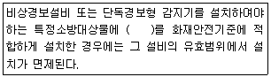
- 자동화재탐지설비
- 스프링클러설비
- 비상조명등
- 무선통신보조설비
(정답률: 66%)
46. 행정안전부령으로 정하는 연소 우려가 있는 구조에 대한 기준 중 다음 ( ) 안에 알맞은 것은?
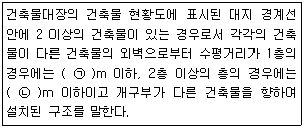
- ㉠ 3, ㉡ 5
- ㉠ 5, ㉡ 8
- ㉠ 6, ㉡ 8
- ㉠ 6 , ㉡ 10
(정답률: 53%)
47. 건축허가 등을 함에 있어서 미리 소방본부장 또는 소방서장의 동의를 받아야 하는 건축물 등의 범위기준이 아닌 것은?
- 노유자시설 및 수련시설로서 연면적 100m2 이상인 건축물
- 지하층 또는 무창층이 있는 건축물로서 바닥면적이 150m2 이상인 층이 있는 것
- 차고·주차장으로 사용되는 바닥면적이 200m2 이상인 층이 있는 건축물이나 주차시설
- 장애인 의료재활시설로서 연면적 300m2 이상인 건축물
(정답률: 46%)
48. 소방용수시설의 설치기준 중 주거지역·상업지역 및 공업지역에 설치하는 경우 소방대상물과의 수평거리는 최대 몇 m 이하 인가?
- 50
- 100
- 150
- 200
(정답률: 56%)
49. 자동화재탐지설비의 일반 공사감리기간으로 포함시켜 산정할 수 있는 항목은?
- 고정금속구를 설치하는 기간
- 전선관의 매립을 하는 공사기간
- 공기유입구의 설치기간
- 소화약제 저장용기 설치기간
(정답률: 61%)
50. 소방시설업의 반드시 등록 취소에 해당하는 경우는?
- 거짓이나 그 밖의 부정한 방법으로 등록한 경우
- 다른 자에게 등록증 또는 등록수첩을 빌려준 경우
- 소속 소방기술자를 공사현장에 배치하지 아니하거나 거짓으로 한 경우
- 등록을 한 후 정당한 사유 없이 1년이 지날 때까지 영업을 시작하지 아니하거나 계속하여 1년 이상 휴업한 경우
(정답률: 62%)
51. 건축물의 공사 현장에 설치하여야 하는 임시소방시설과 기능 및 성능이 유사하여 임시소방시설을 설치한 것으로 보는 소방시설로 연결이 틀린 것은? (단, 임시소방시설- 임시소방시설을 설치한 것으로 보는 소방시설 순이다.)
- 간이소화장치 - 옥내소화전
- 간이피난유도선 - 유도표지
- 비상경보장치 - 비상방송설비
- 비상경보장치 - 자동화재탐지설비
(정답률: 43%)
52. 경보설비 중 단독경보형 감지기를 설치해야 하는 특정소방대상물의 기준으로 틀린 것은?
- 연면적 600m2 미만의 숙박시설
- 연면 적 1000m2 미만의 아파트 등
- 연면적 1000m2 미만의 기숙사
- 교육연구시설 내에 있는 연면적 3000m2 미만의 합숙소
(정답률: 44%)
53. 스프링클러설비가 설치된 소방시설 등의 자체점검에서 종합정밀점검을 받아야 하는 아파트의 기준으로 옳은 것은?(관련 규정 개정전 문제로 여기서는 기존 정답인 3번을 누르면 정답 처리됩니다. 자세한 내용은 해설을 참고하세요.)
- 연면적이 3000m2 이상이고 층수가 11층 이상인 것만 해당
- 연면적이 3000m2 이상이고 층수가 16층 이상인 것만 해당
- 연면적이 5000m2 이상이고 층수가 11층 이상인 것만 해당
- 연면적이 5000m2 이상이고 층수가 16층 이상인 것만 해당
(정답률: 44%)
54. 위험물안전관리자로 선임할 수 있는 위험물 취급자격자가 취급할 수 있는 위험물 기준으로 틀린 것은?
- 위험물기능장 자격 취득자 : 모든 위험물
- 안전관리자 교육이수자 : 위험물 중 제4류 위험물
- 소방공무원으로 근무한 경력이 3년 이상인 자 : 위험물 중 제4류 위험물
- 위험물산업기사 자격 취득자 : 위험물 중 제4류 위험물
(정답률: 51%)
55. 다음 중 과태료 대상이 아닌 것은?
- 소방안전관리대상물의 소방안전관리자를 선임하지 아니한 자
- 소방안전관리 업무를 수행하지 아니한 자
- 특정소방대상물의 근무자 및 거주자에 대한 소방훈련 및 교육을 하지 아니한 자
- 특정소방대상물 소방시설 등의 점검결과를 보고하지 아니한 자
(정답률: 41%)
56. 화재의 예방조치 등과 관련하여 불장난, 모닥불, 흡연, 화기 취급, 그 밖에 화재예방상 위험하다고 인정되는 행위의 금지 또는 제한의 명령을 할 수 있는 자는?
- 시·도지사
- 국무총리
- 소방청장
- 소방본부장
(정답률: 51%)
57. 시·도지사가 소방시설업의 영업정지처분에 갈음하여 부과할 수 있는 최대 과징금의 범위로 옳은 것은?(관련 규정 개정전 문제로 여기서는 기존 정답인 3번을 누르면 정답 처리됩니다. 자세한 내용은 해설을 참고하세요.)
- 1000만 원 이하
- 2000만 원 이하
- 3000만 원 이하
- 5000만 원 이하
(정답률: 61%)
58. 화재경계지구의 지정대상이 아닌 것은?
- 공장·창고가 밀집한 지역
- 목조건물이 밀집한 지역
- 농촌지역
- 시장지역
(정답률: 68%)
59. 1급 소방안전관리대상물에 대한 기준이 아닌 것은? (단, 동·식물원, 철강 등 불연성 물품을 저장·취급하는 창고, 위험물 저장 및 처리 시설 중 위험물 제조소등, 지하구를 제외한 것이다.)
- 연면적 15000m2 이상인 특정소방대상물 (아파트는 제외)
- 150세대 이상으로서 승강기가 설치된 공동주택
- 가연성가스를 1000톤 이상 저장·취급하는 시설
- 30층 이상(지하층은 제외)이거나 지상으로부터 높이가 120m 이상인 아파트
(정답률: 49%)
60. 2급 소방안전관리대상물의 소방안전관리자 선임 기준으로 틀린 것은?
- 전기공사산업기사 자격을 가진 자
- 소방공무원으로 3년 이상 근무한 경력이 있는지
- 의용소방대원으로 2년 이상 근무한 경력이 있는 자
- 위험물산업기사 자격을 가진 자
(정답률: 51%)
4과목: 소방기계시설의 구조 및 원리
61. 분말소화약제의 가압용가스 또는 축압용 가스의 설치기준 중 틀린 것은?
- 가압용가스에 이산화탄소를 사용하는 것의 이산화탄소는 소화약제 1kg에 대하여 20g에 배관의 청소에 필요한 양을 가산한 양 이상으로 할 것
- 가압용가스에 질소가스를 사용하는 것의 질소가스는 소화약제 1kg마다 40L (35℃에서 1기압의 압력상태로 환산한 것) 이상으로 할 것
- 축압용 가스에 이산화탄소를 사용하는 것의 이산화탄소는 소화약제 1kg에 대하여 20g에 배관의 청소에 필요한 양을 가산한 양 이상으로 할 것
- 축압용 가스에 질소가스를 사용하는 것의 질소가스는 소화약제 1kg에 대하여 40L(35℃에서 1기압의 압력상태로 환산한 것) 이상으로 할 것
(정답률: 54%)
62. 소화기에 호스를 부착하지 아니할 수 있는 기준 중 옳은 것은?
- 소화약제의 중량이 2kg 미만인 이산화탄소 소화기
- 소화약제의 중량이 3L 미만의 액체계 소화약제 소화기
- 소화약제의 중량이 3kg 미만인 할로겐화물 소화기
- 소화약제의 중량이 4kg 미만의 분말 소화기
(정답률: 49%)
63. 경사강하식 구조대의 구조 기준 중 틀린 것은?
- 구조대 본체는 강하방향으로 봉합부가 설치되어야 한다.
- 손잡이는 출구부근에 좌우 각 3개 이상 균일한 간격으로 견고하게 부착하여야 한다.
- 구조대본체의 끝부분에는 길이 4m 이상, 지름4 ㎜ 이상의 유도선을 부착하여야 하며, 유도선 끝에는 중량 3N(300g ) 이상의 모래주머니 등을 설치하여야 한다.
- 본체의 포지는 하부지지장치에 인장력이 균등하게 걸리도록 부착하여야하며 하부지지장치는 쉽게 조작할 수 있어야 한다.
(정답률: 62%)
64. 옥내소화전설비 배관과 배관이음쇠의 설치기준중 배관 내 사용압력이 1.2MPa 미만일 경우에 사용하는 것이 아닌 것은?
- 배관용탄소강관(KS D 3507)
- 배관용 스테인리스강관(KS D 3576)
- 덕타일 주철관(KS D 4311)
- 배관용 아크용접 탄소강강관(KS D 3583)
(정답률: 54%)
65. 특정소방대상물에 따라 적응하는 포소화설비의 설치기준 중 발전기실, 엔진펌프실, 변압기, 전기케이블실, 유압설비 바닥면적의 합계가 300m2 미만의 장소에 설치 할 수 있는 것은?
- 포헤드설비
- 호스릴포소화설비
- 포워터스프링클러설비
- 고정식 압축공기포소화설비
(정답률: 48%)
66. 소화수조가 옥상 또는 옥탑의 부분에 설치된 경우에는 지상에 설치된 채수구에서의 압력이 최소 몇 MPa 이상이 되도록 하여야 하는가?
- 0.1
- 0.15
- 0.17
- 0.25
(정답률: 67%)
67. 차고 또는 주차장에 설치하는 분말소화설비 의소화약제로 옳은 것은?
- 제1종 분말
- 제2종 분말
- 제3종 분말
- 제4종 분말
(정답률: 73%)
68. 스프링클러헤드의 설치기준 중 다음 ( ) 안에 알맞은 것은?
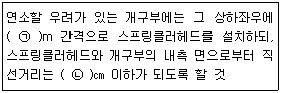
- ㉠ 1.7, ㉡ 15
- ㉠ 2.5, ㉡ 15
- ㉠ 1.7, ㉡ 25
- ㉠ 2.5, ㉡ 25
(정답률: 43%)
69. 연소방지설비 방수헤드의 설치기준 중 다음 ( ) 안에 알맞은 것은?
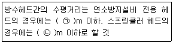
- ㉠ 2, ㉡ 1.5
- ㉠ 1.5, ㉡ 2
- ㉠ 1.7, ㉡ 2.5
- ㉠ 2.5, ㉡ 1.7
(정답률: 33%)
70. 완강기와 간이완강기를 소방대상물에 고정 설치해 줄 수 있는 지지대의 강도시험 기준 중 ( ) 안에 알맞은 것은?
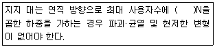
- 250
- 750
- 1500
- 5000
(정답률: 44%)
71. 상수도 소화용수설비의 설치기준 중 다음 ( ) 안에 알맞은 것은?
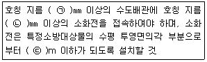
- ㉠ 65, ㉡ 100, ㉢ 120
- ㉠ 65, ㉡ 100, ㉢ 140
- ㉠ 75, ㉡ 100, ㉢ 120
- ㉠ 75, ㉡ 100, ㉢ 140
(정답률: 60%)
72. 물분무소화설비를 설치하는 차고 또는 주차장의 배수설비 설치기준 중 틀린 것은?
- 차량이 주차하는 장소의 적당한 곳에 높이 10㎝ 이상 경계턱으로 배수구를 설치할 것
- 배수구에는 새어나온 기름을 모아 소화할 수 있도록 길이 30m 이하마다 집수관, 소화핏트 등 기름분리장치를 설치할 것
- 차량이 주차하는 바닥은 배수구를 향하여 100분의 2 이상의 기울기를 유지할 것
- 배수설비는 가압송수장치의 최대송수능력의 수량을 유효하게 배수할 수 있는 크기 및 기울기로 할 것
(정답률: 67%)
73. 청정소화약제소화설비를 설치한 특정소방 대상물 또는 그 부분에 대한 자동폐쇄장치의 설치기준 중 다음 ( ) 안에 알맞은 것은?
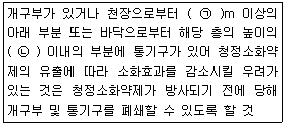
- ㉠ 1, ㉡ 3분의 2
- ㉠ 2, ㉡ 3분의 2
- ㉠ 1, ㉡ 2분의 1
- ㉠ 2, ㉡ 2분의 1
(정답률: 43%)
74. 특별피난계단의 계단실 및 부속실 제연설비의 비상전원은 제연설비를 유효하게 최소 몇 분 이상 작동할 수 있도록 하여야 하는가? (단, 층수가 30층 이상 49층 이하인 경우이다.)
- 20
- 30
- 40
- 60
(정답률: 60%)
75. 스프링클러헤드를 설치하는 천장·반자·천장과 반자사이·덕트·선반 등의 각 부분으로부터 하나의 스프링클러헤드까지의 수평거리 기준으로 틀린 것은?
- 무대부에 있어서는 1.7m 이하
- 랙크식 창고에 있어서는 2.5m 이하
- 공동주택(아파트) 세대 내의 거실에 있어서는 3.2m 이하
- 특수가연물을 저장 또는 취급하는 장소에 있어서 는 2.1m 이하
(정답률: 52%)
76. 소화약제 외의 것을 이용한 간이소화용구의 능력단위 기준 중 다음 ( )안에 알맞은 것은? (문제 오류로 가답안 발표시 1번으로 발표되었지만 확정답안 발표시 전항 정답 처리 되었습니다. 여기서는 1번을 누르면 정답 처리 됩니다.)
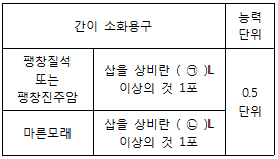
- ㉠ 50, ㉡ 80
- ㉠ 50, ㉡ 160
- ㉠ 100, ㉡ 80
- ㉠ 100, ㉡ 160
(정답률: 71%)
77. 물분무헤드를 설치하지 아니할 수 있는 장소의 기준 중 다음 ( ) 안에 알맞은 것은?
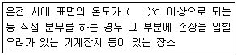
- 160
- 200
- 260
- 300
(정답률: 69%)
78. 청정소화약제 저장용기의 설치장소 기준 중 다음 ( ) 안에 알맞은 것은?(문제 출제 당시는 청정소화약제 명칭을 사용하였으나 추후 명칭이 변경되었습니다. 기존 명칭이 "청정소화약제"인데 명칭으로 보면 인체무해한 약제라는 의미를 내포하기 때문에 "할로겐화합물 및 불활성기체"로 변경됨)
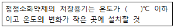
- 40
- 55
- 60
- 75
(정답률: 54%)
79. 포 소화약제의 저장량 설치기준 중 포헤드방식 및 압축공기포소화설비에 있어서 하나의 방사구역 안에 설치된 포헤드를 동시에 개방하여 표준방사량으로 몇 분간 방사할 수 있는 양 이상으로 하여야 하는가?
- 10
- 20
- 30
- 60
(정답률: 35%)
80. 폐쇄형간이헤드를 사용하는 설비의 경우로서 1개 층에 하나의 급수배관(또는 밸브 등)이 담당하는 구역의 최대면적은 몇 m2를 초과하지 아니하여야 하는가?
- 1000
- 2000
- 2500
- 3000
(정답률: 44%)